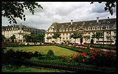
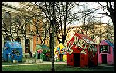

Make a copy of the full-size photo, after any touch-up or
processing, but before it has been sharpened - the last step.
Make a copy of the full-size photo, after any touch-up or
processing, but before it has been sharpened - the last step.
This means creating a duplicate of the original file, in your graphics program's native format.
This page describes how to make thumbnails of photographs for use on web pages, including various tips. Many of the ideas come from Philip Greenspun's Adding Image to Your Site.
Make a copy of the full-size photo, after any touch-up or
processing, but before it has been sharpened - the last step.
This means creating a duplicate of the original file, in your graphics
program's native format.
Apply either a Remove Dust And Scratches filter, with a
radius of two to four pixels, or a strong blur filter.
This removes any graininess or imperfections, which might introduce
artifacts in the shrunk version.
 If the photo is for information, rather than merely aesthetic
purposes, consider cropping the photo to enhance relevance.
If the photo is for information, rather than merely aesthetic
purposes, consider cropping the photo to enhance relevance.
See Relevance-Enhanced Image Reduction in the
Marginalia of Web Design Alertbox column.
Shrink the photo to the desired thumbnail size. If all
thumbnails are to be the same size, whatever the photo's original shape, then specify the small size in one dimension so that the other is too big, and can be cropped.
Most of the thumbnails on Hilton Harbour are shrunk to 192 by
119 pixels at this stage, a good size that happens to be a good approximation of the golden rectangle.

Increase the saturation by ten or even twenty per cent. If there
are people in the photo use a smaller value so that skin tones do not become lurid.
More saturated colours help make the subject more recognisable in a small
thumbnail. Also, more colourful thumbnails look better, in a way that wouldn't be the case for a large photo.
Sharpen the thumbnail using Unsharp Mask with a radius
of 0.5 pixels and a strength of 100-120 per cent. Alternatively, the Adobe Sharpen filter is usually about right.
If anything, it is better to slightly over-sharpen thumbnails, to
accentuate detail in the photo, because the artifacts of sharpening show up less on a small image.

Set the background colour to black and use Canvas Size
to enlarge the picture but six pixels in both dimensions. This adds a black three-pixel border.
This makes the colours stand out better and increases contrast against
light web page backgrounds. The border width is a matter of taste, but I prefer 1.5 per cent on each side - the effect of enlarging the canvas to 103 per cent of its original size in both dimensions. The border should be added after sharpening, the last processing step, so that the boundary between the border and the image isn't sharpened.
Save the image in JPEG format, with a quality setting of 60-80
per cent.
This should produce a file whose size is between 5 Kbytes and 9 Kbytes,
which is appropriate for most web pages. It is usually necessary to use a higher quality setting for the thumbnail than for the full-size photo, because the thumbnail has more detail and more saturated colours, both of which are affected by JPEG compression.